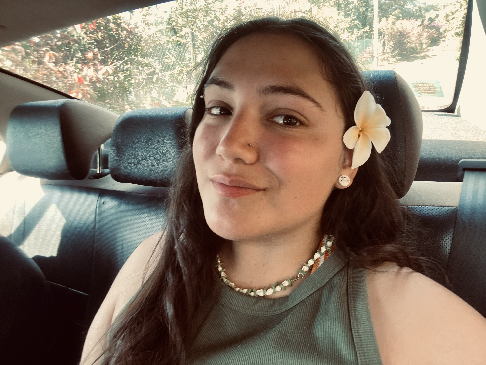
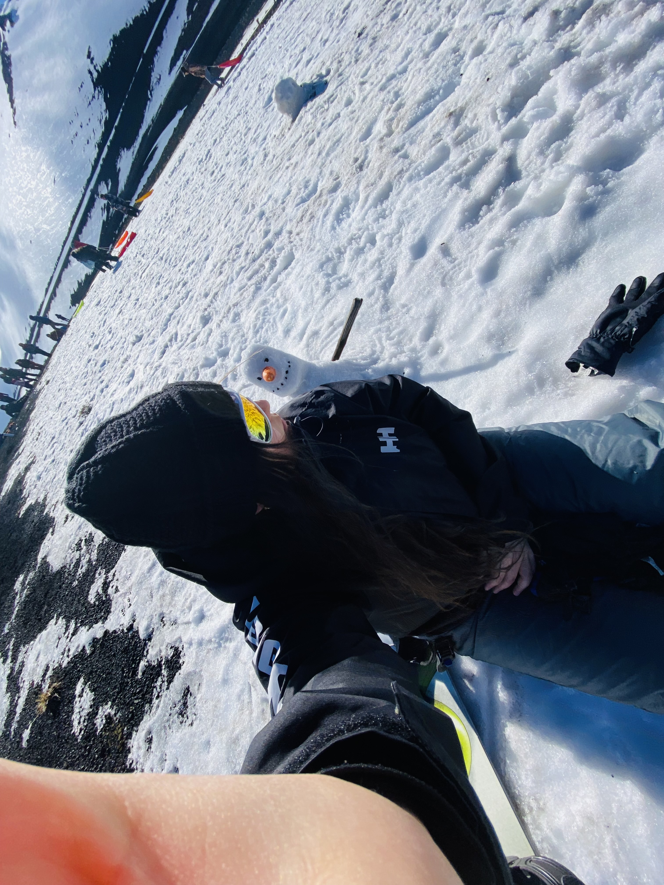

Estudiante de Ingeniería Civil en Informática. En estos 5 años de carrera me ha gusta crear/diseñar apps para poder ayudar a las personas, aunque este último tiempo me ha llamado un poco más la atención la ciberseguridad. Soy fan de las cafeterías, salir hacer trekking y la repostería. Este es mi rincón para mostrar un poco sobre mí, lo que he construido y hacia dónde quiero ir.
Plataforma para gestionar las prácticas de Informática: estudiantes, encargado de prácticas, empresa y seguimiento.
App para que estudiantes encuentren y publiquen arriendos cerca de la universidad.
Sistema de reservas online: agenda, clientes y horarios en tiempo real.
Auto-atención con clasificación automática de pacientes y cola en tiempo real.
Migré la base de datos SQL Server local de la empresa a un servidor SQL Server en Amazon AWS. Analicé la estructura y los tipos de datos de la BBDD original y reconstruí el esquema en la nube (tablas, desencadenadores y diagramas) replicando el modelo existente. Diseñé la estrategia de carga masiva para subir la información (datos tributarios del SII, productos, facturas de compra y venta, clientes y proveedores), logrando la migración de más de 4.000 registros con cero pérdida de datos. Para validar y presentar el resultado, desarrollé una página en PHP conectada a la nueva base de datos, con tablas y filtros para consultar toda la información migrada. A partir de este trabajo, propuse a la empresa incorporar en su sitio web un portal donde sus clientes pudieran revisar sus propios datos de ventas y facturación.
Completé el Programa de Certificación para Creadores MasterBase®, desarrollando soluciones sobre su plataforma de automatización. Configuré formularios, vistas, procesos y bases de datos con herramientas visuales preconfiguradas (Wizards) e integré elementos HTML, construyendo una solución completa por etapas de forma autónoma y con apoyo de tutorías y laboratorios. Documenté las configuraciones y validé periódicamente los avances con el equipo de MasterBase®.
¿Trabajamos juntos? Acá está mi CV y por dónde encontrarme.
⬇ Descargar CV¡gracias por llegar hasta acá!